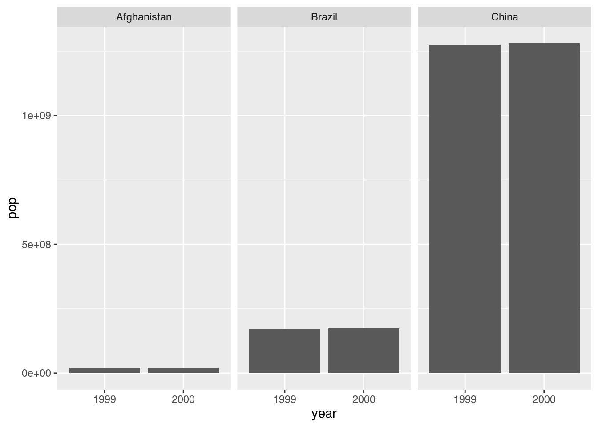

library(tidyverse)7 Datenbereinigung
Nachdem wir gelernt haben, eigens gewählte Daten zu importieren, ist es notwendig, in einem nächsten Schritt zu lernen, wie wir derartige Daten in ein Format überführen können, das wir mittels der uns bekannten Funktionen auswerten und visualisieren können. Hierfür werden wir zunächst ein Verständnis einheitlicher Datenformate gewinnen, bevor wir Funktionen kennenlernen, um vorhandene Tabellen umzugestalten.1
In diesem Kapitel lernen wir…
- …was innerhalb des
tidyverseals “ordentliche” Daten (tidy data) verstanden wird. - …wie wir eine Variable in mehrere Variablen trennen oder mehrere Variablen zu einer einzigen Variablen zusammenfügen.
- …was “lange” und “breite” Tabellenformate sind und wie wir vorhandene Tabellenformate verändern können.
Wir benötigen hierfür das folgende Paket:
7.1 Tidy data
7.1.1 Definition
Nachdem wir bereits viele Pakete des tidyverse kennengelernt haben, ist die Frage angebracht, weshalb diese Kombination von Paketen das Wort tidy (zu deutsch “ordentlich” oder “aufgeräumt”) im Namen trägt. Tatsächlich verbirgt sich hinter dieser Bezeichnung eine präzise Vorstellung davon, wie Daten idealerweise für die WeiterveraRbeitung in einer Tabelle angeordnet sein sollten. Laut Wickham, Çetinkaya-Rundel, und Grolemund (2023, Kap. 5.2) sind Daten dann tidy, wenn drei Prinzipien erfüllt sind:
- Jede Variable ist eine Spalte; jede Spalte ist eine Variable.
- Jede Beobachtung ist eine Zeile; jede Zeile ist eine Beobachtung.
- Jeder Wert ist eine Zelle; jede Zelle ist ein Wert.
Diese drei Prinzipien lassen sich visuell leicht darstellen.

Diese drei Prinzipien erscheinen einfach und intuitiv, dennoch sind Tabellen oftmals anders aufgebaut. Die Gründe hierfür sind, dass die Organisation einer Tabelle oft eher die Eingabe, nicht die Auswertung, widerspiegelt und dass die meisten Nutzer*innen von Tabellen mit den Prinzipien von tidy data nicht vertraut sind. Sobald wir aber professionelle Datenauswertung betreiben möchten, lohnt es sich, diese Prinzipien zu erlernen und umzusetzen.
7.1.2 Beispiele
Betrachten wir drei Beispiele, um unser Verständnis zu schärfen. Handelt es sich bei table2 um tidy data?2
table2# A tibble: 12 × 4
country year type count
<chr> <dbl> <chr> <dbl>
1 Afghanistan 1999 cases 745
2 Afghanistan 1999 population 19987071
3 Afghanistan 2000 cases 2666
4 Afghanistan 2000 population 20595360
5 Brazil 1999 cases 37737
6 Brazil 1999 population 172006362
7 Brazil 2000 cases 80488
8 Brazil 2000 population 174504898
9 China 1999 cases 212258
10 China 1999 population 1272915272
11 China 2000 cases 213766
12 China 2000 population 1280428583Nein, das tut es nicht. Die Spalten type und count folgen nicht der Logik von tidy data, denn die Werte von count beziehen sich jeweils auf eine in der Spalte type angegebene Variable. Wollten wir zum Beispiel die Bevölkerungswerte mit mutate() ein eine andere Dimension umrechnen, müssten wir alle Werte in der Spalte count umrechnen, was die Werte der Lebenserwartung verzerren würde.
Wie steht es mit table3, handelt es sich hierbei um tidy data?
table3# A tibble: 6 × 3
country year rate
<chr> <dbl> <chr>
1 Afghanistan 1999 745/19987071
2 Afghanistan 2000 2666/20595360
3 Brazil 1999 37737/172006362
4 Brazil 2000 80488/174504898
5 China 1999 212258/1272915272
6 China 2000 213766/1280428583Nein, auch diese Tabelle ist nicht tidy. Die Variable rate ist ein character-String, der augenscheinlich zwei Variablen beinhaltet, nämlich einen Zähler (die cases-Angabe) und einen Nenner (die population-Angabe). In einer aufgeräumten Tabelle würden sich diese Variablen in separaten Spalten befinden, sodass wir etwa aus ihnen eine dritte Variable mit mutate() berechnen könnten.
Wie sieht es zuletzt mit table1 aus, ist diese Tabelle tidy?
table1# A tibble: 6 × 4
country year cases population
<chr> <dbl> <dbl> <dbl>
1 Afghanistan 1999 745 19987071
2 Afghanistan 2000 2666 20595360
3 Brazil 1999 37737 172006362
4 Brazil 2000 80488 174504898
5 China 1999 212258 1272915272
6 China 2000 213766 1280428583Ja, in diesem Fall sind alle drei Prinzipien erfüllt.
7.1.3 Vorteile
Auf den ersten Blick mögen die vorangegangenen Beispiele wenig bedeutsam wirken. Wie aber die Hinweise bereits andeuteten, hat tidy data zwei wichtige Vorteile:
- Konsistenz: Sobald wir einmal lernen, mit einem einheitlichen Tabellenformat zu arbeiten, können wir uns besser darauf konzentrieren, diesem Format entsprechende Funktionen zu erlernen.
- Funktionalität: Weil R besonders auf die Arbeit mit Vektoren ausgerichtet ist (Kapitel 3.5.1), erleichtert es die Arbeit erheblich, wenn Variablen in Spalten angeordnet sind. Alle Funktionen aus
dplyrundggplot2, die wir bislang kennengelernt haben, funktionieren mit tidy data am besten.
Messy data?
Die Bezeichnung tidy data soll im Umkehrschluss nicht bedeuten, dass Daten in jedem anderen möglichen Format “schlecht” sind. Viele Tabellenformate haben gewisse Vorteile für bestimmte Anwendungsbereiche. Die Vorteile von tidy data gelten insbesondere für R und sind deshalb nicht uneingeschränkt universalisierbar.
7.1.4 tidyr
Das tidyverse-Paket, dessen Aufgabe die Bereinigung von Tabellen ist, nennt sich tidyr.3 Dieses Paket bietet eine Reihe an Funktionen, wir beschränken uns jedoch auf zwei Anwendungsbereiche: den Umgang mit Variablen und die Organisation von Tabellen.
7.2 Variablen
7.2.1 Trennen
Ein Problem, dem wir regelmäßig begegnen, ist, dass eine Spalte mehrere Variablen beinhaltet. Dies war der Fall bei table3.
table3# A tibble: 6 × 3
country year rate
<chr> <dbl> <chr>
1 Afghanistan 1999 745/19987071
2 Afghanistan 2000 2666/20595360
3 Brazil 1999 37737/172006362
4 Brazil 2000 80488/174504898
5 China 1999 212258/1272915272
6 China 2000 213766/1280428583Wie bereits erklärt, beinhaltet rate tatsächlich zwei Variablen, wobei die erste Zahl für die Fallzahl (cases) und die zweite Zahl für die Bevölkerung (population) steht. Um eine solche Variable in zwei (oder mehr) separate Variablen zu trennen, nutzen wir separate(). Diese Funktion benötigt Angaben zu mindestens vier Parametern:
data: Der Inhalt welcher Tabelle soll bereinigt werden?col: Welche Spalte (column) soll getrennt werden?into: In welche Spalten sollen in die Inhalte der Spalte getrennt werden?sep: Durch welches Trennzeichen (separator) sind die Inhalte der Spalte voneinander getrennt?
In diesem Fall möchten wir die Spalte rate (col) von table3 (data) in zwei neue Variablen namens cases und population (into) trennen, wobei wir als Trennzeichen (sep) den Ausdruck "/" nutzen möchten.
table3 |>
separate(col = rate, # Spalte trennen
into = c("cases", "population"), # Neue Variablen erstellen
sep = "/") # Trennzeichen angeben# A tibble: 6 × 4
country year cases population
<chr> <dbl> <chr> <chr>
1 Afghanistan 1999 745 19987071
2 Afghanistan 2000 2666 20595360
3 Brazil 1999 37737 172006362
4 Brazil 2000 80488 174504898
5 China 1999 212258 1272915272
6 China 2000 213766 1280428583Die Trennung war erfolgreich: rate haben wir in cases und population getrennt. Wichtig ist, dass bei der Trennung die ursprüngliche Variable entfernt wurde, weil standardmäßig der Parameter remove auf TRUE gesetzt ist. Wollen wir die ursprüngliche Variable behalten, ändern wir diese Einstellung.4
table3 |>
separate(col = rate,
into = c("cases", "population"),
sep = "/",
remove = FALSE) # Ursprüngliche Variable behalten# A tibble: 6 × 5
country year rate cases population
<chr> <dbl> <chr> <chr> <chr>
1 Afghanistan 1999 745/19987071 745 19987071
2 Afghanistan 2000 2666/20595360 2666 20595360
3 Brazil 1999 37737/172006362 37737 172006362
4 Brazil 2000 80488/174504898 80488 174504898
5 China 1999 212258/1272915272 212258 1272915272
6 China 2000 213766/1280428583 213766 1280428583Uns fällt jedoch auf, dass die beiden neuen Variablen vom Datentyp character (Kapitel 3.4) sind. Tatsächlich handelt es sich jedoch um Zahlen. separate() verfügt glücklicherweise über weitere optionale Parameter neben remove, darunter auch convert (zu deutsch “konvertieren”). Setzen wir diesen Parameter auf TRUE, versucht tidyr, die neuen Variablen automatisch in einen passenden Datentyp umzuwandeln.
table3 |>
separate(col = rate,
into = c("cases", "population"),
sep = "/",
convert = TRUE) # Variablentypen umwandeln# A tibble: 6 × 4
country year cases population
<chr> <dbl> <int> <int>
1 Afghanistan 1999 745 19987071
2 Afghanistan 2000 2666 20595360
3 Brazil 1999 37737 172006362
4 Brazil 2000 80488 174504898
5 China 1999 212258 1272915272
6 China 2000 213766 12804285837.2.2 Zusammenführen
Wo wir etwas trennen können, können wir es auch zusammenführen. Nehmen wir an, wir würden uns mit der Tabelle kurs beschäftigen.
kurs# A tibble: 6 × 4
vorname nachname kurs semester
<chr> <chr> <chr> <chr>
1 Juliane Außendorf Einf. in R 2024/25
2 Finn Bianga Einf. in R 2024/25
3 Rangin Dalu Einf. in R 2024/25
4 Jakob Feuerer Einf. in R 2024/25
5 Leander Förster Einf. in R 2024/25
6 Tobias <NA> Einf. in R 2024/25 Hierfür können wir das Gegenstück zu separate() namens unite() (zu deutsch “vereinigen”) nutzen. Als Informationen benötigt unite():
data: Der Inhalt welcher Tabelle soll zusammengeführt werden?...: Die Inhalte welcher Spalten (column) sollen zusammengeführt werden?col: Wie soll die neue Variable heißen?sep: Durch welches Trennzeichen (separator) sollen die Inhalte der Spalten miteinander verbunden werden?
In diesem Fall möchten wir die Spalten vorname und nachname (...) der Tabelle kurs (data) in eine neue Variable namens name (sep) zusammenführen, wobei wir als Trennzeichen (sep) ein Leerzeichen (" ") nutzen möchten.
kurs |>
unite(vorname, nachname, # Spalten zusammenführen
col = "name", # Neue Variable erstellen
sep = " ") # Trennzeichen angeben# A tibble: 6 × 3
name kurs semester
<chr> <chr> <chr>
1 Juliane Außendorf Einf. in R 2024/25
2 Finn Bianga Einf. in R 2024/25
3 Rangin Dalu Einf. in R 2024/25
4 Jakob Feuerer Einf. in R 2024/25
5 Leander Förster Einf. in R 2024/25
6 Tobias NA Einf. in R 2024/25 Auch dieser Schritt ist uns geglückt. Allerdings hat R den Platzhalter für einen fehlenden Nachnamen (NA, Kapitel 3.5.1.5) als Text behandelt. Abermals hilft ein Blick in die optionalen Parameter von unite()5, um zu erfahren, dass wir mit na.rm = TRUE ein derartiges Vorgehen unterbinden können.
kurs |>
unite(vorname, nachname,
col = "name",
sep = " ",
na.rm = TRUE) # Fehlende Werte entfernen# A tibble: 6 × 3
name kurs semester
<chr> <chr> <chr>
1 Juliane Außendorf Einf. in R 2024/25
2 Finn Bianga Einf. in R 2024/25
3 Rangin Dalu Einf. in R 2024/25
4 Jakob Feuerer Einf. in R 2024/25
5 Leander Förster Einf. in R 2024/25
6 Tobias Einf. in R 2024/25 7.3 Tabellenorganisation
Neben den unordentlichen Inhalten bestimmter Variablen besteht ein weiteres Problem von importierten Tabellen darin, dass sich die Werte einer Variablen nicht in einer, sondern in mehreren Spalten befinden und die Bezeichnung der Spalten wiederum selbst eine Variable enthält. Das klingt kompliziert, wird aber anhand eines Beispiels deutlich.
table4b# A tibble: 3 × 3
country `1999` `2000`
<chr> <dbl> <dbl>
1 Afghanistan 19987071 20595360
2 Brazil 172006362 174504898
3 China 1272915272 1280428583Diese Tabelle stellt die Bevölkerungszahl nicht in einer, sondern in zwei Spalten dar. Die Bezeichnung der Spalten (1999 und 2000) wiederum enthält eigentlich keine Variablenbezeichnung, sondern die Werte einer weiteren Variable: nämlich des Jahres. Die Tabelle befindet sich damit in einem sog. breiten (wide) Format. Demgegenüber stehen Tabellen in einem sog. langen (long) Format, wie dieses Schema illustriert:

7.3.1 Verlängern
Bevor wir mit ihnen arbeiten können, müssen wir regelmäßig breite Tabellen so bearbeiten, dass ihr Inhalt als lange Tabelle dargestellt wird. Hierbei sprechen wir vom “Drehen” (pivoting) einer Tabelle. Die zuständigen Funktionen heißen entsprechend pivot_*(). Um eine breite Tabelle zu “verlängern”, bedienen wir uns pivot_longer(). Folgende Parameter benötigt die Funktion:
data: Der Inhalt welcher Tabelle soll gedreht werden?cols: Der Inhalt welcher Spalten (column) soll gedreht werden?names_to: Wie soll die neue Spalte heißen, in der die Namen der bisherigen Spalten erfasst werden sollen?values_to: Wie soll die neue Spalte heißen, in der die Werte der bisherigen Spalten erfasst werden sollen?
In unserem Beispiel wollen wir die Inhalte der Spalten 1999 und 2000 (cols) aus der Tabelle table4b (data) so drehen, dass die bisherigen Namen in einer neuen Spalte year (names_to) und die bisherigen Werte in einer neuen Spalte pop (values_to) festgehalten werden.
table4b |>
pivot_longer(cols = c(`1999`, `2000`), # Spalten auswählen
names_to = "year", # Variable für Namen
values_to = "pop") # Variable für Werte# A tibble: 6 × 3
country year pop
<chr> <chr> <dbl>
1 Afghanistan 1999 19987071
2 Afghanistan 2000 20595360
3 Brazil 1999 172006362
4 Brazil 2000 174504898
5 China 1999 1272915272
6 China 2000 1280428583Sollte es sich um mehrere Spalten handeln, die wir nicht manuell angeben möchten, können wir auch die Spalten anhand ihrer Position auswählen. Außerdem könnten wir, wie in Verwendung von select() gelernt, auch Hilfsfunktionen verwenden (Kapitel 4.3.2.2).
table4b_long <- table4b |>
pivot_longer(cols = 2:3, # Spalten anhand der Position auswählen
names_to = "year",
values_to = "pop")
table4b_long# A tibble: 6 × 3
country year pop
<chr> <chr> <dbl>
1 Afghanistan 1999 19987071
2 Afghanistan 2000 20595360
3 Brazil 1999 172006362
4 Brazil 2000 174504898
5 China 1999 1272915272
6 China 2000 1280428583In diesem Format können wir auf einfachste Art mit ggplot2 eine Visualisierung erstellen. Mit der Ursprungstabelle wäre dies nicht möglich gewesen.
table4b_long |>
ggplot(mapping = aes(x = year,
y = pop)) +
geom_col() +
facet_wrap(~ country)
Oft enthalten die Spaltennamen in breiten Tabellen neben Variablen auch noch Präfixe, also vorangestellte Worte. In dieser veränderten Tabelle steht in letzten beiden Spalten neben der Jahresabgabe noch year_.
table4b_prefix <- table4b |>
rename(year_1999 = `1999`,
year_2000 = `2000`)
table4b_prefix# A tibble: 3 × 3
country year_1999 year_2000
<chr> <dbl> <dbl>
1 Afghanistan 19987071 20595360
2 Brazil 172006362 174504898
3 China 1272915272 1280428583Wenn wir beim Verlängern dieser Tabelle solche einheitliche Präfixe weglassen möchten, können wir mit dem Parameter names_prefix einstellen, dass diese vor dem Verlängern entfernt werden sollen.
table4b_prefix |>
pivot_longer(cols = 2:3,
names_to = "year",
names_prefix = "year_", # Präfix entfernen
values_to = "pop")# A tibble: 6 × 3
country year pop
<chr> <chr> <dbl>
1 Afghanistan 1999 19987071
2 Afghanistan 2000 20595360
3 Brazil 1999 172006362
4 Brazil 2000 174504898
5 China 1999 1272915272
6 China 2000 12804285837.3.2 Verbreitern
Vergleichbar mit separate() und unite() gibt es zu pivot_longer() auch ein Gegenstück: pivot_wider(). Mit dieser Funktion können wir eine bestehende Tabelle “verbreitern”. Folgende Parameter benötigt die Funktion:
data: Der Inhalt welcher Tabelle soll gedreht werden?names_from: In welcher Spalte befinden sich die Werte, die als neue Spaltennamen genutzt werden sollen?values_from: In welcher Spalte befinden sich die Werte, die als neue Werte für mehrere Spalten genutzt werden sollen?
Wenn wir unsere verlängerte Tabelle table4b_long (data) also wieder in ihr Ursprungsformat verwandeln möchten, müssen wir lediglich angeben, dass die Namen der zu erzeugenden Spalten (names_from) aus der Spalte year und die Werte (values_from) aus der Spalte pop entnommen werden sollen.
table4b_wide <- table4b_long |>
pivot_wider(names_from = year,
values_from = pop)
table4b_wide# A tibble: 3 × 3
country `1999` `2000`
<chr> <dbl> <dbl>
1 Afghanistan 19987071 20595360
2 Brazil 172006362 174504898
3 China 1272915272 1280428583Sowohl lange als auch breite Tabellen haben nützliche Eigenschaften. Mit table4b bzw. table4b_wide könnten wir zwar weniger leicht ein einfaches Diagramm zeichnen, dafür aber leicht eine Veränderungsrate als neue Variable berechnen.6
table4b_wide |>
mutate(change_percent = (`2000` - `1999`) / `1999` * 100)# A tibble: 3 × 4
country `1999` `2000` change_percent
<chr> <dbl> <dbl> <dbl>
1 Afghanistan 19987071 20595360 3.04
2 Brazil 172006362 174504898 1.45
3 China 1272915272 1280428583 0.5907.4 Übungsaufgaben
7.4.1 Variablen
7.4.1.1 Trennen
Betrachten Sie die durch tidyr mitgelieferte Tabelle billboard, welche US-Chartpositionen aus dem Jahr 2000 enthält. Stellen Sie sich die folgenden Fragen:
- Welches Format hat die Tabelle? Ist sie weit oder lang?
- Welche Prinzipien von tidy data werden (nicht) befolgt?
In einem weiteren Schritt trennen Sie die Variable date.entered in drei separate Variablen (year, month und day). Ihr Ergebnis (ohne die wk-Spalten) sollte so aussehen (beachten Sie auch die Variablentypen!):
# A tibble: 317 × 5
artist track y m d
<chr> <chr> <int> <int> <int>
1 2 Pac Baby Don't Cry (Keep... 2000 2 26
2 2Ge+her The Hardest Part Of ... 2000 9 2
3 3 Doors Down Kryptonite 2000 4 8
4 3 Doors Down Loser 2000 10 21
5 504 Boyz Wobble Wobble 2000 4 15
6 98^0 Give Me Just One Nig... 2000 8 19
7 A*Teens Dancing Queen 2000 7 8
8 Aaliyah I Don't Wanna 2000 1 29
9 Aaliyah Try Again 2000 3 18
10 Adams, Yolanda Open My Heart 2000 8 26
# ℹ 307 more rows7.4.1.2 Verbinden
Betrachten Sie die durch tidyr mitgelieferte Tabelle table5. Verbinden Sie die Spalten century und year zu einer neuen Spalte year, die eine korrekte, vierstellige Jahresangabe beinhaltet. Nutzen Sie außerdem ein weiteres dplyr-Verb, um die Variable in den richtigen Datentyp zu transformieren (Kapitel 3.4.8.3). Ihr Ergebnis sollte so aussehen:
# A tibble: 6 × 3
country year rate
<chr> <dbl> <chr>
1 Afghanistan 1999 745/19987071
2 Afghanistan 2000 2666/20595360
3 Brazil 1999 37737/172006362
4 Brazil 2000 80488/174504898
5 China 1999 212258/1272915272
6 China 2000 213766/12804285837.4.2 Tabellenorganisation
7.4.2.1 billboard
Verlängern Sie billboard so, dass die Wochenangaben in einer Variable week und die Platzierungen in einer Variable rank dargestellt werden. Ihr Ergebnis sollte so aussehen:
# A tibble: 5,307 × 5
artist track date.entered week rank
<chr> <chr> <date> <chr> <dbl>
1 2 Pac Baby Don't Cry (Keep... 2000-02-26 1 87
2 2 Pac Baby Don't Cry (Keep... 2000-02-26 2 82
3 2 Pac Baby Don't Cry (Keep... 2000-02-26 3 72
4 2 Pac Baby Don't Cry (Keep... 2000-02-26 4 77
5 2 Pac Baby Don't Cry (Keep... 2000-02-26 5 87
6 2 Pac Baby Don't Cry (Keep... 2000-02-26 6 94
7 2 Pac Baby Don't Cry (Keep... 2000-02-26 7 99
8 2Ge+her The Hardest Part Of ... 2000-09-02 1 91
9 2Ge+her The Hardest Part Of ... 2000-09-02 2 87
10 2Ge+her The Hardest Part Of ... 2000-09-02 3 92
# ℹ 5,297 more rows7.4.2.2 who2
Betrachten Sie die Tabelle who2. Stellen Sie sich erneut die folgenden Fragen:
- Welches Format hat die Tabelle? Ist sie weit oder lang?
- Welche Prinzipien von tidy data werden (nicht) befolgt?
Nachdem wie in Erfahrung gebracht haben, wofür die Spaltennamen stehen7, verlängern Sie die Tabelle so, dass die einzelnen Informationen in drei verschiedene Variablen diagnosis, gender und age_group sowie die Fallzahlen in einer Variable count dargestellt werden. Ihr Ergebnis sollte so aussehen:
# A tibble: 405,440 × 6
country year diagnosis gender age_group count
<chr> <dbl> <chr> <chr> <chr> <dbl>
1 Afghanistan 1980 sp m 014 NA
2 Afghanistan 1980 sp m 1524 NA
3 Afghanistan 1980 sp m 2534 NA
4 Afghanistan 1980 sp m 3544 NA
5 Afghanistan 1980 sp m 4554 NA
6 Afghanistan 1980 sp m 5564 NA
7 Afghanistan 1980 sp m 65 NA
8 Afghanistan 1980 sp f 014 NA
9 Afghanistan 1980 sp f 1524 NA
10 Afghanistan 1980 sp f 2534 NA
# ℹ 405,430 more rows7.4.2.3 geburten
Erzeugen und betrachten Sie die Tabelle geburten, die wir in der letzten Sitzung eingelesen haben (Kapitel 6.5.1).
geburten <- tibble(jahr = c(2013, 2014, 2015, 2016, 2017, 2018, 2019,
2020, 2021, 2022, 2023),
geburten_insgesamt = c(109562, 113935,
118228, 125689, 126191, 127616, 128227, 128764, 134321, 124897,
116505),
geburten_maennlich = c(55913, 58695, 60511, 64503, 64294,
65272, 65760, 65932, 68881, 64000, 59917),
geburten_weiblich = c(53649,
55240, 57717, 61186, 61897, 62344, 62467, 62832, 65440, 60897,
56588))
geburten# A tibble: 11 × 4
jahr geburten_insgesamt geburten_maennlich geburten_weiblich
<dbl> <dbl> <dbl> <dbl>
1 2013 109562 55913 53649
2 2014 113935 58695 55240
3 2015 118228 60511 57717
4 2016 125689 64503 61186
5 2017 126191 64294 61897
6 2018 127616 65272 62344
7 2019 128227 65760 62467
8 2020 128764 65932 62832
9 2021 134321 68881 65440
10 2022 124897 64000 60897
11 2023 116505 59917 56588- Verlängern Sie diese Tabelle so, dass die Geschlechtsangabe und die Anzahl der Geburten in eigenen Variablen vorliegen. Ihr Ergebnis sollte so aussehen:
# A tibble: 33 × 3
jahr geschlecht geburten
<dbl> <chr> <dbl>
1 2013 insgesamt 109562
2 2013 maennlich 55913
3 2013 weiblich 53649
4 2014 insgesamt 113935
5 2014 maennlich 58695
6 2014 weiblich 55240
7 2015 insgesamt 118228
8 2015 maennlich 60511
9 2015 weiblich 57717
10 2016 insgesamt 125689
# ℹ 23 more rows- Diese Tabelle ist aufgeräumt, aber für manche Zwecke ungeeignet. Was, wenn wir den Anteil an Geburten je nach Geschlecht und Jahr berechnen wollen? Eine Möglichkeit, dies zu tun, wäre die folgende: Verlängern Sie
geburtenstatt wie zuvor so, dass nur die Spaltengeburten_maennlichundgeburten_weiblichherangezogen werden. Die Spaltengeburten_insgesamtsoll hingegen erhalten bleiben. In einem weiteren Schritt nutzen Siemutate(), um den jeweiligen Anteil zu berechnen. Ihr Ergebnis sollte so aussehen:
# A tibble: 22 × 5
jahr geburten_insgesamt geschlecht geburten anteil
<dbl> <dbl> <chr> <dbl> <dbl>
1 2013 109562 maennlich 55913 51
2 2013 109562 weiblich 53649 49
3 2014 113935 maennlich 58695 51.5
4 2014 113935 weiblich 55240 48.5
5 2015 118228 maennlich 60511 51.2
6 2015 118228 weiblich 57717 48.8
7 2016 125689 maennlich 64503 51.3
8 2016 125689 weiblich 61186 48.7
9 2017 126191 maennlich 64294 50.9
10 2017 126191 weiblich 61897 49.1
# ℹ 12 more rows7.5 Lösungen
7.5.1 Variablen
7.5.1.1 Trennen
billboard |>
select(1:3) |>
separate(col = date.entered,
into = c("y", "m", "d"),
sep = "-",
convert = TRUE)7.5.1.2 Verbinden
table5 |>
unite(year,
century, year,
sep = "") |>
mutate(year = as.numeric(year))7.5.2 Tabellenorganisation
7.5.2.1 billboard
billboard |>
pivot_longer(cols = starts_with("wk"), # or !1:2
names_to = "week",
values_to = "rank",
names_prefix = "wk", # or parse_number afterwards
values_drop_na = TRUE)7.5.2.2 who2
who2 |>
pivot_longer(cols = !1:2,
names_to = c("diagnosis", "gender", "age_group"),
names_sep = "_",
values_to = "count")7.5.2.3 geburten
geburten |>
pivot_longer(cols = starts_with("geburten"),
names_to = "geschlecht",
names_prefix = "geburten_",
values_to = "geburten")geburten |>
pivot_longer(cols = c(geburten_maennlich, geburten_weiblich),
names_to = "geschlecht",
names_prefix = "geburten_",
values_to = "geburten") |>
mutate(anteil = round(geburten / geburten_insgesamt * 100, digits = 1))Dieses Kapitel basiert auf Wickham, Çetinkaya-Rundel, und Grolemund (2023, Kap. 5).↩︎
Bei
table1bistable5wie auch beiwhoundwho2handelt es sich um Beispieltabellen, die im Pakettidyrvorhanden sind. Sie beziehen sich auf Bevölkerungsangaben und von der Weltgesundheitsorganisation dokumentierte Tuberkulose-Fälle (siehe?table1).↩︎Auch für dieses Package liegt ein cheatsheet vor (Kapitel 2.4.5). In der aktuellsten Version wurde die Funktion
separate()jedoch durch neuere Varianten (separate_wider_position()undseparate_wider_delim()) ersetzt. Weilseparate()in der älteren Form jedoch nach wie vor sehr verbreitet und seine Logik sich ohne Mühe auf die Nachfolgefunktionen übertragen lässt, nutzen wir in diesem Kapitel nach wie vorseparate().↩︎Siehe
?separate. Dasselbe Vorgehen gilt fürunite().↩︎Siehe
?unite.↩︎Im langen Tabellenformat hätten wir für diese Berechnung
group_by(),mutate()und die Hilfsfunktionlag()nutzen müssen:table4b_long |> group_by(country) |> mutate(change_percent = (pop - lag(pop)) / pop * 100).↩︎Siehe
?who2.↩︎